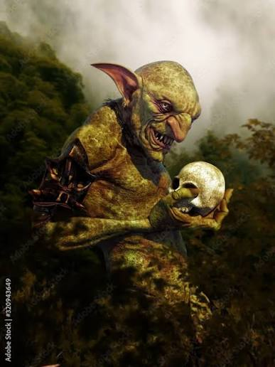

ACT III // FIELD REPORT
Your field journal keeps every recorded species and habit. There is always another observation to make.
TAKE YOUR TIME
SPECIES & THEIR HABITS
Recorded notes persist between expeditions. Revisit observation sites to fill gaps. Draft entries are placeholders, not discoveries.
SOURCE LEDGER
Forest, Tree of Life, Goblin, and Chupacabra images were supplied for this project. The Goblin portrait retains its visible Adobe Stock watermark; no open-license claim is made for these supplied images.
assets/goblin.jpg
assets/goblin-1.jpg
assets/chupa.jpg
Saving is unavailable in this browser. Your notes will last only for this visit.